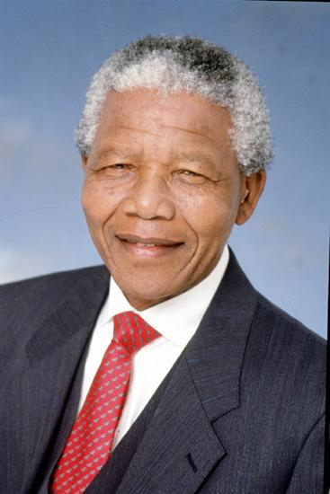

Nelson Rolihlahla Mandela was a South African anti-apartheid revolutionary, political leader, and philanthropist who served as the first democratically elected President of South Africa from 1994 to 1999.
He spent 27 years in prison for fighting against apartheid, becoming a global symbol of peace, justice, reconciliation, and equality.
Born in Mvezo, South Africa.
Joined the African National Congress (ANC).
Sentenced to life imprisonment.
Released after 27 years in prison.
Awarded the Nobel Peace Prize.
Became South Africa's first democratically elected President.
Passed away, leaving an enduring legacy.
"It always seems impossible until it's done."